6.5.1. Registro de Caja Cobranza¶
Ubique y seleccione en el menú de ADempiere, la carpeta “Gestión de Saldos Pendientes”, luego seleccione la carpeta “Diario de Caja”, por último seleccione la ventana “Caja”.

Imagen 1. Menú de ADempiere
Luego podrá visualizar la ventana “Caja”, donde debe seleccionar el icono “Registro Nuevo” ubicado en la barra de herramientas de ADempiere para crear un nuevo registro en caja.
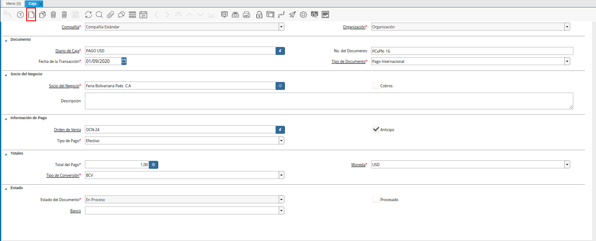
Imagen 2. Icono Registro Nuevo
Seleccione en el campo “Organización”, la organización para la cual esta realizando el documento “Caja”.

Imagen 3. Campo Organización
Seleccione en el campo “Diario de Caja”, la caja correspondiente al registro que se encuentra realizando.

Imagen 4. Campo Diario de Caja
Introduzca en el campo “No. del Documento”, el número de documento correspondiente a la secuencia del tipo de documento que se encuentra realizando.

Imagen 5. Campo Nro del Documento
Seleccione en el campo “Fecha de la Transacción”, la fecha en la que se encuentra realizando el registro.

Imagen 6. Campo Fecha de la Transacción
Seleccione el tipo de documento a generar en el campo “Tipo de Documento”, la selección de este define el comportamiento del documento que se esta elaborando, dicho comportamiento se encuentra explicado en el documento “Tipo de Documento” elaborado por ERPyA. Para ejemplificar el registro es utilizada la opción “Cobro Nacional”.

Imagen 7. Campo Tipo de Documento
Seleccione en el campo “Socio del Negocio”, el socio del negocio relacionado al registro que se encuentra realizando.

Imagen 8. Campo Socio del Negocio
Introduzca en el campo “Descripción”, una breve descripción referente al registro que se encuentra realizando.

Imagen 9. Campo Descripción
Seleccione en el campo “Factura”, la factura relacionada al registro que se encuentra realizando.
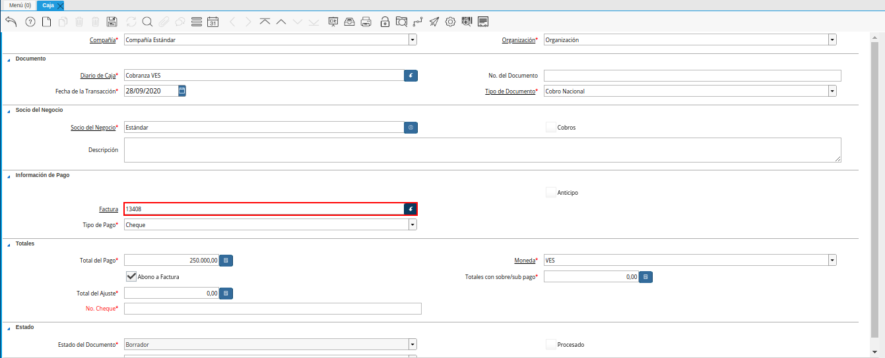
Imagen 10. Campo Factura
Note
Al seleccionar la factura, se carga automáticamente el campo “Total del Pago”, con la información contenida en la factura seleccionada.
Seleccione en el campo “Tipo de Pago”, la forma de pago utilizada por el socio del negocio seleccionado anteriormente.

Imagen 11. Campo Tipo de Pago
Al seleccionar la factura se carga de forma automática el monto de la misma en el campo “Total del Pago”.
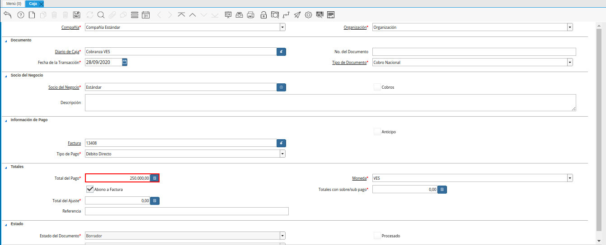
Imagen 12. Campo Total del Pago
Note
Este campo se refiere al monto total del pago realizado por el socio del negocio cliente, correspondiente al abono o anticipo del mismo.
Seleccione en el campo “Moneda”, la moneda asociada al registro que se encuentra realizando.

Imagen 13. Campo Moneda
El checklist “Abono a Factura”, determina si se está realizando un abono a la factura correspondiente o simplemente se cancela completamente y el restante se ajusta.
Este checklist se comporta de dos (2) maneras diferentes, cuando el monto del cobro es mayor al de la factura. Suponiendo que se tiene una factura de cuentas por cobrar con monto de “250.000,00 bs”, pero el cliente realiza el pago de la factura por un monto mayor a la misma. Se pueden presentar las siguientes opcinoes según el caso expresado:
“Checklist Abono a Factura Tildado”: Cuando el monto excedente del monto a pagar de la factura es un valor considerablemente alto, el campo “Totales con sobre/sub pago” toma como valor el monto excedente. Por defecto ADempiere deja el checklist tildado, de esta manera el monto que contiene el campo “Totales con sobre/sub pago”, queda a favor del cliente. A continuación se muestra una imagen para referencia del ejemplo expuesto.

Imagen 14. Monto a Favor del Cliente
“Checklist Abono a Factura Destildado”: Cuando el monto excedente del monto a pagar de la factura es un valor bajo o en su defecto el cliente no lo quiera por cualquier motivo, se debe destildar el checklist “Abono a Factura” para que el valor del campo “Totales con sobre/sub pago” correspondiente al monto del excedente, sea tomado por el campo “Total del Ajuste”, quedando este a favor de la compañía. A continuación se muestra una imagen para referencia del ejemplo expuesto.

Imagen 15. Monto a Favor de la Compañía
Para el registro del presente material, se toma como ejemplo el pago exacto del monto de la factura. Quedando los campos “Totales con sobre/sub pago” y “Total del Ajuste” en cero (0,00).

Imagen 16. Campo Abono a Factura
Podrá visualizar en el campo “Totales con sobre/sub pago”, el total de sobre pago (no contabilizado) o sub pago (pago parcial).

Imagen 17. Campo Totales con Sobre/Sub Pagos
Podrá visualizar en el campo “Total del Ajuste”, el total a ser ajustado como incobrable.

Imagen 18. Total del Ajuste
Introduzca en el campo “Referencia”, la referencia de pago que indica el pago.

Imagen 19. Referencia
El campo “Estado del Documento”, indica el estado del documento en este momento, para cambiar el estado del documento utilice la opción “Procesar Pago”, desplegada por el icono “Proceso”, ubicado en la barra de herramientas de ADempiere.
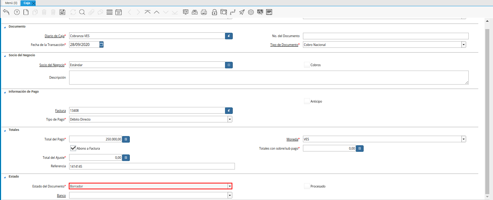
Imagen 20. Campo Estado del Documento
Seleccione en el campo “Banco”, el banco para esta organización o para un socio del negocio con quien esta organización efectúa transacciones.
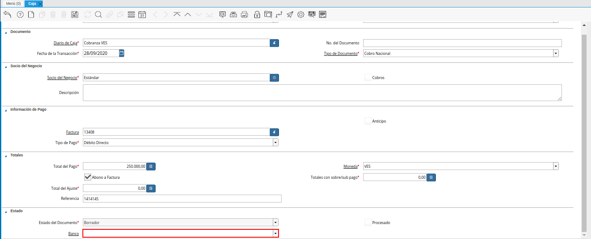
Imagen 21. Campo Banco
El checklist “Procesado”, indica que un documento ha sido procesado.

Imagen 22. Checklist Procesado
Seleccione la opción “Procesar Pago”, desplegada por el icono “Proceso”, ubicado en la barra de herramientas de ADempiere.

Imagen 23. Opción Procesar Pago
Seleccione la acción “Completar” y la opción “OK”, para completar el documento “Caja”.
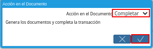
Imagen 24. Acción Completar
Realice el procedimiento regular para generar un cierre de caja, explicado en el documento Registro de Cierre de Caja, elaborado por ERPyA, seleccionando en el campo “Tipo de Documento” la opción “Cierre de Caja Cobranza”.

Imagen 25. Cierre de Caja Cobranza
Ubique y seleccione en el menú de ADempiere, la carpeta “Gestión de Saldos Pendientes”, luego seleccione la carpeta “Diario de Caja”, por último seleccione la ventana “Depósito de Caja”.

Imagen 26. Menú de ADempiere
Luego podrá visualizar la ventana de búsqueda inteligente “Depósito de Caja”, con diferentes campos o filtros para realizar la búsqueda de información en base a lo requerido por el usuario.

Imagen 27. Ventana de Búsqueda Inteligente Depósito de Caja
Seleccione en el campo “Cuenta Bancaria”, la caja cobranza seleccionada en el campo “Cuenta” de la ventana “Caja”. Para ejemplificar el registro es utilizada la cuenta bancaria “Caja Cobranza - –_Cobranza VES”.

Imagen 28. Campo Cuenta Bancaria
Seleccione la opción “Comenzar Búsqueda”, para filtar búsqueda de la información en base a lo seleccionado.
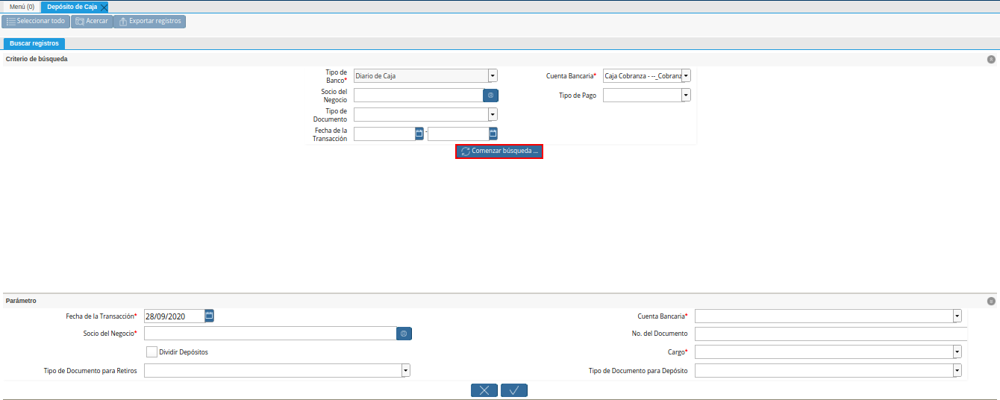
Imagen 29. Opción Comenzar Búsqueda
Podrá visualizar la ventana de búsqueda inteligente “Depósito de Caja”, con los diferentes registros asociados a la cuenta bancaria seleccionada.
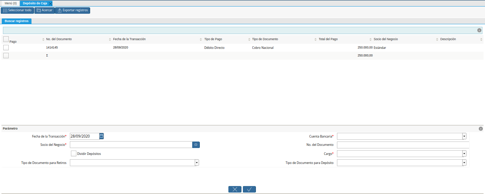
Imagen 30. Ventana de Búsqueda Inteligente Depósito de Caja
Seleccione en el campo “Fecha de la Transacción”, la fecha contable de la caja de la cual se va a realizar el depósito.

Imagen 31. Campo Fecha de la Transacción
Seleccione en el campo “Socio del Negocio”, la compañía para la cual realizó los documentos “Caja”, “Cierre de Caja” y para la cual va a realizar el “Depósito de Caja”.

Imagen 32. Campo Socio del Negocio
El checklist “Dividir Depósitos” destildado, permite visualizar el campo “No. del Documento” para ingresar el número de referencia del pago realizado por el socio del negocio y es utilizado cuando se tienen varios registros de caja con el mismo número de referencia, generando un (1) documento de egreso en “Caja” y un (1) documento de cobro en “Pago/Cobro”.
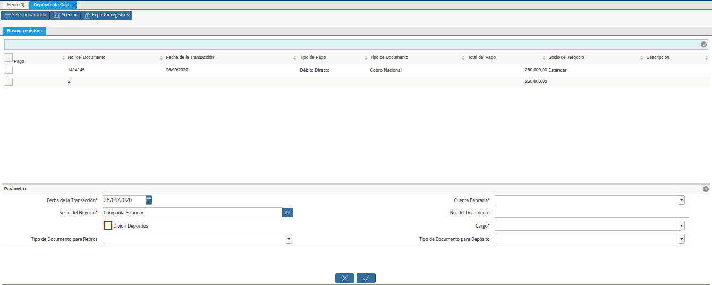
Imagen 33. Checklist Dividir Depósitos Destildado
Adicional a ello, al tildar el checklist “Dividir Depósitos” no puede ser visualizado el campo “No. del Documento”, esta acción permite que sea generado un (1) documento de egreso en “Caja”, con la sumatoria de todos los registros de documentos “Caja” que sean seleccionados en la ventana de búsqueda inteligente “Depósito de Caja” y un (1) documento de cobro en “Pago/Cobro”, por cada uno de los registros seleccionados en dicha ventana.
Imagen 34. Checklist Dividir Depósitos Tildado
Seleccione en el campo “Tipo de Documento para Retiros”, el tipo de documento que será generado en la ventana “Caja”. Para ejemplificar el registro, el tipo de documento para retiros utilizado es “Egreso Caja”.
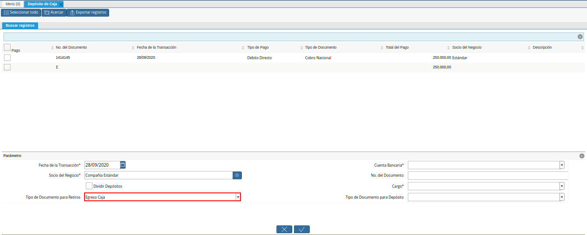
Imagen 35. Campo Tipo de Documento para Retiros
Seleccione en el campo “Cuenta Bancaria”, la cuenta bancaria a la cual será realizado el depósito de caja.

Imagen 36. Campo Cuenta Bancaria
Introduzca en el campo “No. del Documento”, el número de referencia del pago realizado por el socio del negocio cliente.

Imagen 37. Campo Número del Documento
Seleccione en el campo “Cargo”, el cargo correspondiente al procedimiento que se esta realizando. Para ejemplificar el registro es utilizado el cargo “Efectivo en Transito Cobranza”.

Imagen 38. Campo Cargo
Seleccione en el campo “Tipo de Documento para Depósitos”, el tipo de documento que será generado en la ventana “Pago/Cobro”. Para ejemplificar el registro, el tipo de documento para depósito utilizado es “Cobro Nacional”.

Imagen 39. Campo Tipo de Documento para Depósito
Seleccione los diferentes registros de caja que pertenezcan a un mismo banco y la opción “OK” para ejecutar el proceso “Depósito de Caja” con la información ingresada en la ventana de búsqueda inteligente “Depósito de Caja”. Para ejemplificar el registro es seleccionado solo el registro de caja “1414145”.

Imagen 40. Selección de Caja y Opción OK
Note
Se deben seleccionar solo los registros que se conozca que pertencen al banco seleccionado en el campo “Cuenta Bancaria”.
Podrá visualizar los números de documentos en la parte inferior izquierda de la ventana de búsqueda inteligente “Depósito de Caja”. Dichos números de documentos pueden ser utilizados para ubicar los documetos generados.
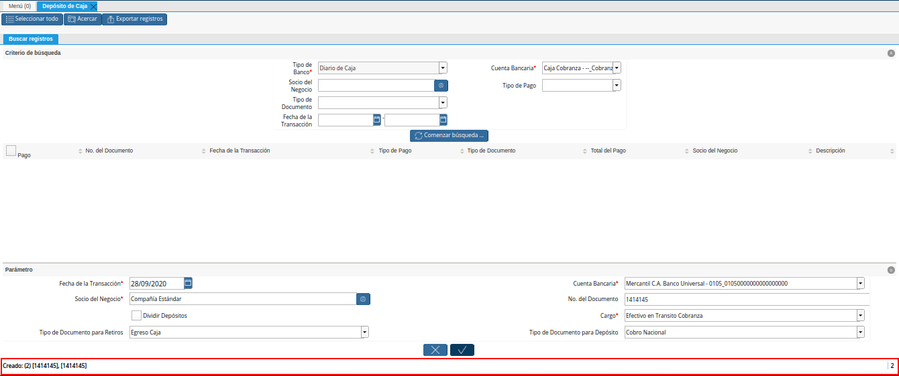
Imagen 41. Números de Documento Generados
Al consultar del documento de egreso generado en la ventana “Caja”, con ayuda del número de documento generado en la parte inferior izquierda de la ventana de búsqueda inteligente “Depósito de Caja”, se puede visualizar el registro de la siguiente manera.

Imagen 42. Documento de Egreso Generado en Caja
Al consultar del documento de ingreso generado en la ventana “Pago/Cobro”, con ayuda del número de documento generado en la parte inferior izquierda de la ventana de búsqueda inteligente “Depósito de Caja”, se puede visualizar el registro de la siguiente manera.
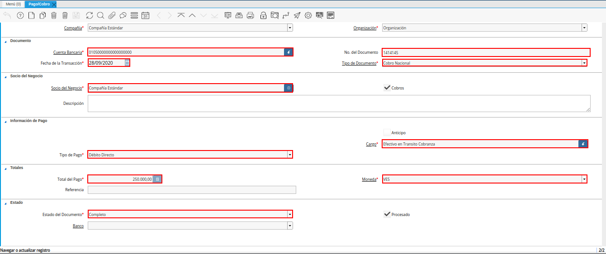
Imagen 43. Documento de Cobro Generado en Pago/Cobro
Realice el procedimiento regular para generar un cierre de caja, explicado en el documento Registro de Cierre de Caja, elaborado por ERPyA, seleccionando en el campo “Tipo de Documento” la opción “Cierre de Caja Administrativo”.

Imagen 44. Cierre de Caja Administrativo